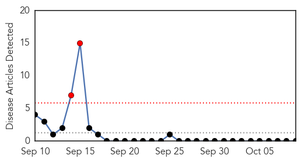
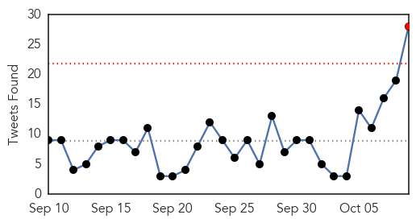
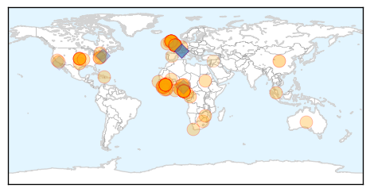

Bubonic Plague
30-Day Web Trend
2 alerts, 0 warnings

30-Day Twitter Trend
0 alerts, 0 warnings

Article Locations

Article Confidences

Top Articles:
-
No articles found for Oct 09, 2015
Top Tweets:
-
No tweets found for Oct 09, 2015
Ebola
30-Day Web Trend
1 alerts, 0 warnings

30-Day Twitter Trend
1 alerts, 0 warnings

Article Locations
Article Confidences

Top Articles:
- 1.000
- Pauline Cafferkey, Scots Ebola nurse in ‘serious condition’
- 1.000
- 1st-diagnosed-with-Ebola-in-UK-readmitted - Story
- 1.000
- Ebola scare in Nigeria false alarm: WHO
- 1.000
- 1st-diagnosed-with-Ebola-in-UK-readmitted - Story
- 1.000
- How is Ebola treated and why can it sometimes linger in the body after recovery? Questions about the deadly outbreak answered
- 1.000
- How is Ebola treated and why can it sometimes linger in the body after recovery? Questions about the deadly outbreak answered
- 1.000
- Ebola's persistence causes concern - World News
- 1.000
- Is Ebola Back In Nigeria? 1 Dead, 10 Quarantined In Southeast City Amid Disease Scare
- 1.000
- 10 people quarantined as man dies in Calabar hospital
- 1.000
- Pauline Cafferkey contracts Ebola again and returns to London hospital isolation unit
- 1.000
- Ebola's persistence in survivors fuels concerns over future risks
- 1.000
- How is Ebola treated and why can it sometimes linger in the body after recovery? Questions about the deadly outbreak answered
- 1.000
- WHO: Ebola scare in Nigeria false alarm
- 1.000
- UK’s first Ebola patient back in hospital in serious condition after complication
- 1.000
- Africa - News and Analysis
- 1.000
- Air France Quarantine 183 After 4 Cases in Madrid, Moscow Monitors 2 Students
- 0.999
- No fresh Ebola in Nigeria as test proves negative in Calabar
- 0.999
- Johnson & Johnson Announces Start Of Clinical Trial Of Ebola Vaccine Regimen In Sierra Leone
- 0.999
- British nurse who contracted Ebola hospitalized for late complication
- 0.999
- Nigerian city in new Ebola scare
- 0.999
- Pauline Cafferkey has Ebola virus reoccurence after meeting UK PM’s wife
- 0.999
- UK nurse has Ebola relapse as J&J vaccine trial starts
- 0.999
- Ebola nurse Pauline Cafferkey 'in serious condition'
- 0.999
- Ebola Scare: Nigeria Remains Ebola-free- FG
- 0.999
- Africa - News and Analysis
- 0.998
- British nurse’s re-hospitalization, reports of blindness and other ‘post-Ebola syndrome’ complications haunt survivors
- 0.998
- GOOD NEWS: Calabar case ‘not Ebola’
- 0.998
- Sierra Leone holds her breath as British Ebola free nurse goes back into hospital
- 0.998
- Ten Quarantined Over Possible Infection
- 0.998
- Ebola nurse Pauline Cafferkey transferred to London hospital isolation unit following new scare
- 0.998
- Clinical Trial of Ebola Vaccine Regimen in Sierra Leone
- 0.998
- UPDATE 2-J&J starts vaccine trial in Sierra Leone, even as Ebola fades
- 0.998
- Scottish Ebola nurse back in isolation
- 0.997
- Ebola nurse Pauline Cafferkey treated for 'unusual late complication' of the infection
- 0.997
- Ebola nurse Pauline Cafferkey 'flown to London Royal Free hospital'
- 0.997
- Nurse Pauline Cafferkey returns to Royal Free after Ebola ‘complication’
- 0.997
- J&J starts vaccine trial in Sierra Leone, even as Ebola fades
- 0.997
- J&J starts vaccine trial in Sierra Leone, even as Ebola fades
- 0.996
- Ebola nurse Pauline in hospital with ‘complication’
- 0.996
- Ebola Might Be In Nigeria annually After it had been Declared Free from herpes Time
- 0.996
- Nigerian News from Leadership News
- 0.995
- Scottish Ebola nurse back in isolation
- 0.995
- Ebola-infected British nurse Pauline Cafferkey in "serious condition" after being flown to London isolation unit
- 0.995
- Ebola nurse Pauline Cafferkey in 'serious condition'
- 0.994
- Calabar hospital quarantines 15 patients •Doctor, nurses under watch •FG sends team to UCTH
- 0.993
- British nurse who contracted Ebola hospitalized again
- 0.993
- Mossneuk Primary School parents express worry over ebola nurse's visit
- 0.993
- Ebola Virus Still Present in UK Nurse Pauline Cafferkey
- 0.992
- Johnson & Johnson Starts Clinical Trial Of Ebola Vaccine In Sierra Leone
- 0.992
- UK’s first Ebola patient back in hospital with ‘unusual late complication’
Showing top 50 articles...
Top Tweets:
- 0.985
- WHO Says No New Cases Of Ebola In West Africa Last Week: Is The Epidemic Over? - Tech Times http://t.co/DocE748Cy4 ebola EVD
- 0.965
- Nigerian at centre of Ebola scare did not have the virus - WHO - Yahoo News UK http://t.co/RuKdsTH0GD ebola EVD
- 0.951
- Age-specific incidence of Ebola virus disease @thelancet http://t.co/AEkNVRPxLn
- 0.940
- J&J starts clinical trial of Ebola vaccine in Sierra Leone - Reuters UK http://t.co/mPxVREp0fY ebola EVD
- 0.929
- Johnson & Johnson starts Ebola vaccine trial in Sierra Leone - Your News Now http://t.co/Esgo0G7pFd ebola EVD
- 0.919
- Dr Chan: This Ebola outbreak was different, complex in size & context, in 3 countries which were unfamiliar with the disease & ill-prepared
- 0.918
- Ebola Could Be Back in Nigeria - TIME http://t.co/T65PJXvo5t ebola EVD
- 0.899
- Johnson & Johnson launches Ebola vaccine trial in Sierra Leone - Toronto Star http://t.co/46Yo60Kv47 ebola EVD
- 0.893
- Antiviral compound provides full protection from Ebola virus in nonhuman ... - EurekAlert (press release) http://t.co/iuti3sX52Y ebola EVD
- 0.891
- Ebola Outbreak Winds Down, Effects Still Felt By Survivors - KERO 23ABC News http://t.co/0rBEBp9hia ebola EVD
- 0.890
- RT: You boring, blank, empty, colourless, beautiful, @WHO Ebola virus weekly case map http://t.co/cnoEHjCPDf
- 0.888
- Scottish Ebola nurse treated for infection - The Guardian http://t.co/6UGSMenekZ ebola EVD
- 0.879
- nurse who contracted Ebola hospitalized - The Denver Post http://t.co/l9QiA8s4nc ebola EVD
- 0.868
- Scottish Ebola nurse re-admitted to hospital months after all-clear from Ebola virus http://t.co/MLvF0F1hs1 http://t.co/wbULxCUvvI
- 0.865
- Dr Chan: The Ebola outbreak in West Africa was a dramatic and tragic revelation of weaknesses and gaps http://t.co/dcKUdg5YrJ
- 0.854
- Scottish Ebola nurse is back in hospital in 'serious condition' - MarketWatch http://t.co/6SYv6zwj6y ebola EVD
- 0.842
- UK's first Ebola patient back in hospital in serious condition after complication - CNN International http://t.co/MwOw0dkr13 ebola EVD
- 0.839
- Réactivation du virus Ebola chez une infirmière britannique http://t.co/pnWYdetTaF via
- 0.834
- Ebola scare in Nigeria false alarm: WHO - BBC News http://t.co/ffWYPLTzsn ebola EVD
- 0.818
- Dr Chan: The outbreak in West Africa has been different. Ebola is well-equipped to take advantage of any weaknesses in preparedness
- 0.800
- Pauline Cafferkey arrives for Ebola 'complication' treatment - Daily Mail http://t.co/3aqwLefDQX ebola EVD
- 0.776
- Key equipment is missing from almost every ophthalmologic facility” Ebola Deeply reports on post-Ebola syndrome http://t.co/pTL2YlTU4b 20151009 ebola 0 0.147531311592 Joint pain, crippling headaches, internal bleeding, missed periods, uveitis...Ebola doesn't stop with surviving it http://t.co/pTL2YlTU4b 20151009 ebola 0 0.297319826193 RT: While there is no confirmed Ebola in Nigeria & this is very unlikely, why are we so less concerned when Nigerians di… 20151009 unkno 0 0.0203768722805 RT: Lets wait for results, then let's all sit and examine how we have all reported this story, and how we ignore others. ht… 20151009 ebola 0 0.25092125157 More on Cafferkey's condition: http://t.co/bIrvll9ILA Survivors in rural parts of West Africa have very limited access to post-Ebola care 20151009 ebola 1 0.695484965174 Scottish nurse is suffering from a post-Ebola complication. She's not alone; thousands of survivors face similar issues in West Africa. 20151009 ebola 1 0.658879258239 RT: Many Ebola survivors in Sierra Leone have been suffering unnoticed. They've lost their sight, their body tissues... http:/… 20151009 ebola 0 0.068899581511 Keep it up ebolaresponse ! Liberia SierraLeone Guinea roadtozero https://t.co/PpKDlz1x5m 20151009 measl 0 0.0120714207889 RT: It's a great day when global heath makes the cover of the Economist http://t.co/1TGl9LxGEI malaria globalhealth measles … 20151009 unkno 0 0.0445640182134 Since 2000 malaria deaths have fallen by nearly half http://t.co/EMA3lR3roR 20151009 unkno 0 0.223719253769 FluFactFriday: A fluvax is needed every year because flu viruses are constantly changing and immunity from fluvax declines over time. 20151009 unkno 0 0.0200403220319 Join organizations & individuals calling UN to include GlobalHealth R&D indicators in SDG monitoring framework. http://t.co/ee8lW81JB2 20151009 unkno 0 0.203604419482 RT: Madurar es aprender a aceptar y a fluir en paz. 20151009 unkno 0 0.0143188727908 RT: Stop praying for a better world and start doing something to make it happen. Seriously, I can't do everything...I bar… 20151009 unkno 0 0.0196800231602 Frutas y vegetales. 20151009 unkno 0 0.0693048764115 Donde sea que andes, si ves una abeja, no, atiéndeme bien, no la mates. Bajo ninguna circunstancia. Enséñale a los tuyos. 20151009 unkno 0 0.0220644112994 Jamie... esta convers... 20151009 unkno 1 0.525490935199 Necesito un jarabe de esos que hacen las abuelas. 20151009 unkno 0 0.0346580166073 RT: @danieljdejesus ay ya, Daniel Jodienda el más simpático y fit. 20151009 unkno 0 0.0196800231602 Tienes excelente personalidad, pero aún tienes que mantener tu cuerpo saludable. 20151009 unkno 0 0.0444766190956 Jamie... Ya esta conversación la hemos tenido antes. 20151009 ebola 0 0.149938208883 Antiviral compound effectively treated Ebola in monkeys - http://t.co/jBISy0JYbw http://t.co/tIRQelpRJZ 20151009 ebola 0 0.2359827861 Ebola expert says it is unusual for virus to return – video - The Guardian http://t.co/1oeUg0MNJw 20151009 ebola 0 0.381929302492 Scottish Ebola nurse is back in hospital in 'serious condition' - MarketWatch http://t.co/MKnHWcVxyc 20151009 ebola 0 0.413065186885 UK's first Ebola patient back in hospital in serious condition after complication - CNN International http://t.co/bu9YMMtZby 20151009 ebola 1 0.500299850279 UK nurse with Ebola treated for 'unusual late complication' - Irish Times http://t.co/nTdheu0kQo 20151009 ebola 0 0.182395816197 Ebola detected again in Scottish nurse Pauline Cafferkey - BBC News http://t.co/b5NE1tbQfs 20151009 ebola 0 0.0982093540117 Ebola scare as man dies in Nigerian city of Calabar - BBC News http://t.co/6y4oMHNLjL 20151009 ebola 0 0.0982093540117 Ebola scare as man dies in Nigerian city of Calabar - BBC News http://t.co/SQKJMLAlm3 20151009 unkno 0 0.00830680624758 RT: Microscope photos reveal an alien universe just beyond reach, via http://t.co/PFdw5vRTfZ http://t.co/5D5d… 20151009 unkno 0 0.0114986742897 RT: Best homework excuse ever? http://t.co/GV8IjoGnCV chemnobel http://t.co/9VYiZbESLE 20151009 unkno 0 0.0149411404021 RT: Some seriously beautiful fishes! http://t.co/cFBq79iMC1 20151009 unkno 0 0.0269976313598 Read about NobelPrize winner Youyou Tu's journey to discover the malaria miracle drug artemisinin http://t.co/LgsSLfKmhv DefeatMalaria 20151009 unkno 0 0.019088191887 Malaria in pregnancy linked to brain damage in babies, finds a study http://t.co/kMvYvX5IUW DefeatMIP http://t.co/6hhceEr7kB 20151009 unkno 0 0.173396525255 Read more on how four countries in Southern Africa are on track to eliminate malaria by 2020 http://t.co/jyf5cCiLzr DefeatMalaria 20151009 unkno 0 0.00806900303452 Leaders discuss progress to endmalariaWP. http://t.co/hn0wiaAxDk! http://t.co/Y5bmZXjN9D MFAP2030 20101010 unkno 0 0.0476115509053 Pandemic Information News: Indonesia- First hand account of suspected family cluster http://t.co/eQFQvl9 20101010 unkno 0 0.11224675095 ANTARA News: Bird flu kills 49,000 Makassar chickens, ducks http://t.co/R2m3PpG 20101010 unkno 0 0.106269551133 ANTARA News: Bird flu alertness status declared in Balikpapan http://t.co/KTCJ7yK 20140823 ebola 0 0.253299627256 What's next? Being infected = crime?: MT Sheltering Ebola pts now a crime in SL http://t.co/PSR5wbAOyV 20140823 unkno 0 0.0182149169783 I thought I smelled something. RT August downpour results in sewage overflow of 12 million gallons http://t.co/f46XXPkbHg 20140823 unkno 0 0.0297804851477 yes. What is the overlap w/current quarantine area, I wonder 20140823 ebola 0 0.22768409876 thx! it looks like the 'parrot's beak' is also the hot zone 4 the ebola outbreak, but have not seen the term used much. 20140823 unkno 0 0.0136367772842 thank you Maryam! 20140823 unkno 0 0.0672077058747 Is the forested triangle betw Liberia, SierraLeone, and Guinea still called the parrot's beak"?
- 0.771
- Scottish Ebola nurse flown to specialist hospital in London - The Guardian http://t.co/zCrKTVDDwe ebola EVD
- 0.765
- Johnson & Johnson Announces Start of Clinical Trial of Ebola Vaccine Regimen ... - MarketWatch http://t.co/rSVZj19ASc ebola EVD
- 0.763
- Ebola expert says it is unusual for virus to return – video - The Guardian http://t.co/ybpNtY5dO6 ebola EVD
- 0.742
- Experienced Ebola doctor & researcher Janet Scott on post-Ebola syndrome. Tune in to BBC WS in 20 minutes! https://t.co/Zbrk36r3R5
- 0.717
- Dr Chan: Clinicians had no vaccine, no treatment, and no personal equipment specifically designed to protect them from Ebola
- 0.714
- Live webcast→ Review Committee on the Role of the International Health Regulations in the Ebola outbreak & Response http://t.co/1NjaxqCNH5
- 0.703
- Ebola detected again in Scottish nurse Pauline Cafferkey - BBC News http://t.co/BuOKT9eM9T ebola EVD
- 0.634
- Rethinking the Ebola response: How Liberians helped themselves https://t.co/kshv7TKkBH
- 0.629
- Ebola scare as man dies in Nigerian city of Calabar - BBC News http://t.co/h68Yl6ra5R ebola EVD
- 0.629
- Ebola scare as man dies in Nigerian city of Calabar - BBC News http://t.co/0PCjRZiOrF ebola EVD
- 0.620
- Antiviral compound effectively treated Ebola in monkeys - http://t.co/GffD6BGkbO http://t.co/3XoipY64BS ebola EVD
- 0.619
- New J&J Ebola vaccine clinical trial underway in Sierra Leone via http://t.co/B2G1EJw8va
- 0.619
- Ebola Nurse Pauline Cafferkey Back in Hospital After 'Complication' - http://t.co/FMQyohd10H http://t.co/eeqNgLgiKY ebola EVD
- 0.599
- West African Response to the Ebola Crisis: An Interview with Director of Humanitarian Assistance http://t.co/7OkKClfCSl
- 0.594
- RT: WHO to G7 leaders 'Ebola in West Africa was not a worst-case scenario' Our scientists agree http://t.co/CI2IW2Undc https://…
- 0.537
- Ebola Nations Declare First Week With No New Cases http://t.co/3NrovbIvgc
- 0.524
- 8 Oct - news on avianflu avianinfluenza Ebola EbolaResponse MERS, vaccines, all in one news pouch here: http://t.co/M8dE0l77HN
- 0.514
- Safety and immunogenicity clinical trial of Ebola vaccine regimen starts in ... - http://t.co/A9wAAOLz1c http://t.co/9PzMp2UPxk ebola EVD
- 0.510
- Lessons learned from the Ebola outbreak and the International Health Regulations IHR http://t.co/U3SDOVxOoZ G7 http://t.co/s5HPa20cxr
- 0.507
- Did Ebola relatively spare children? | @thelancet http://t.co/7aeDpNmxJH